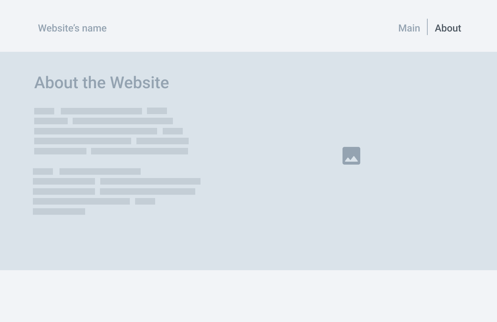
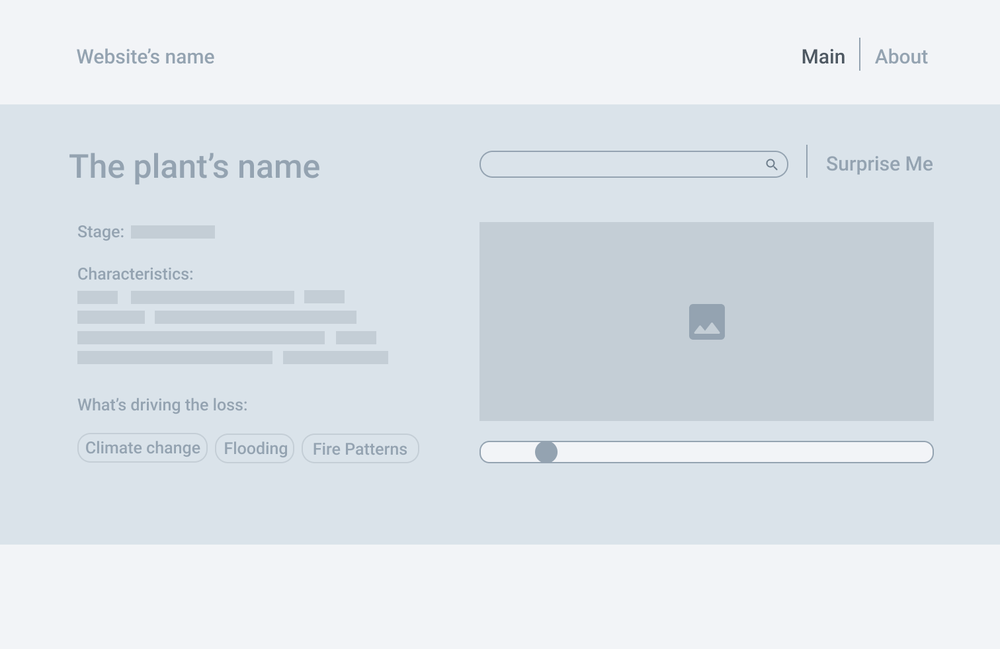
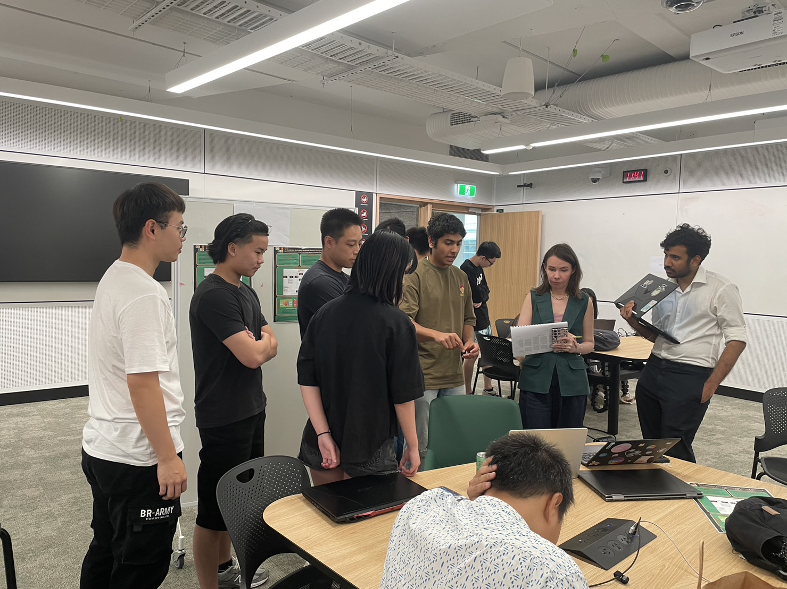
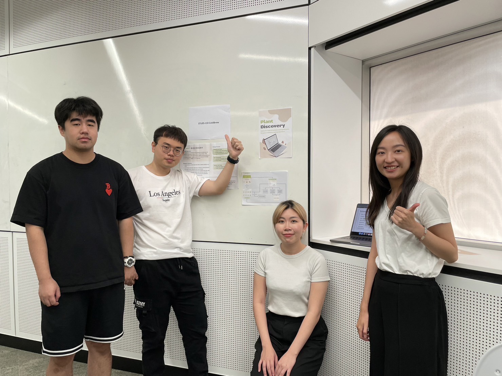

About Me
My name is Vic Hong, an international student studying in master of IT
in the University of Queensland. I have a strong interest in database
and backend program development. Although the project of this semester
was primarily related to frontend development, I still enjoyed working
on JavaScript of the project and collaborating with my teammates to build
a project from scratch. In this project, I was mainly responsible for
developing the interactive functions of the website. In this webpage,
the project would be divided by me into three parts, which are design
proposal, MVP milestones, and final product to respectively introduce
how we completed this project, as well as a clear explanation of my
individual contributions in each part.

You can contact me via my email: vic61316@gmail.com.
Part A - Design Proposal
Proposed design concept:
 Low fidelity:
Low fidelity:
1. In Australia, there are 1,402 plant species and subspecies are
nationally listed as threatened (Australian Wildlife Conservancy, 2022).
Australia is a beautiful continent with a rich diversity of flora and fauna.
However, it actually has almost 1,400 plant species are currently listed as
endangered by related authorities. As a result, we aimed to create a website
that offers our users some basic information of these endangered plants.
2. Longer books, for example, are considered less “fun”. (Marsh, 2023).
Dr. Marsh points out that in certain cases, excessive information and text
may not be ideal for readers. Combining both perspectives, our expectation
for our project was to provide users with valuable information while maintaining
an engaging and interactive experience.
Interaction / Task flow:
The design focuses on creating interactive learning
experiences for children to easily obtain information about endangered plants.
The pictures below represent the low-fidelity of the website.
At this stage, we initially decided to provide plant information retrieved from API.
The components below are the primary reason for why the plant is endangered.
On the right side, an animation of the plant's growth processes is demonstrated.
However, once upon the disaster button is pressed, regardless of the plant's current
growth stage, the disaster animation will appear. Additionally, the website is
designed with a search and a "surprise me" function.


Individual contribution:
1. Rephrasing word expression.
2. Persona making.
3. Further study mentioned in design proposal.
Reflection of part A:
The low-fidelity design served a foundation
for us to understand how to begin our project. We then brainstormed on how to
present the project properly and explore various of other websites for inspiration.
Part B - MVP milestones
Overview:


 Reflection of part B:
Reflection of part B:
Starting from Part B, our team members had clearly divided our roles into two groups.
The female members are all from Master of Interaction Design, and they would be
responsible for creating the report of presentation user testing, and the design of the
website. On the other hand, the male members, including myself, are all from master of IT,
we would focus on completing all the web development tasks.
The pictures above were the websites prototypes designed by female members after they
completed the design process and user testing. Left one show the outfit out gallery page
while right one is description page. Tao is other teammate of us and he would be responsible
for gallery page, and me, were distributed to take the part of description page.
Individual contribution:
I was responsible for creating the row bar in the website. Frontend development is an area
I was actually not very familiar with, and building a horizontal bar was quite challenging for me.
I continually repeated two activities: searching the internet, and recalling what I learned in my
previous course, 7140, and eventually, I successfully completed the task. My core concept was to
add a crucial CSS class called ".slider_dragged" within the row bar. Secondly, set its
initial width to 0 and positioned it to the left of the handle. Then, I added event
listeners to track the user's mouse coordinates within the website and dynamically
adjusted the width of the elements within the ".slider_dragged" class. This made it
visually appear like the handle is being moving. As for binding the images of a plant’s
growth stages to the handle, my approach was to stack all the images together in the frame
initially. I used JavaScript to monitor the width of ".slider_dragged." When the width range
is 0 to 800 (the width of the slider) / 6, I adjusted the z-index of the first image to 1
while keeping the others at 0, representing the seed stage. When the width increases from
800 / 6 to 800 / 3, it transitions to the second growth stage image, and so on. In
In this way, as I moved the slider from left to right, visually the plant would
grow through its stages one by one. And below is a piece of my JavaScript code and the result.
We received a good score in MVP part. Tutors praised the design and interactivity
of our website's MVP. The factor where we were marked down were missing some of
the components that the professor had required. For instance, we ignored listing
each team member's responsibilities, self-assessment of our strengths and weaknesses,
and a reflection of making the MVP. These components indeed provide valuable insights,
and we should document them.
Part C - Final product
Firstly, you can access our website by the link:
https://deco1800teams-stu05t10coldbrew.uqcloud.net/Plant/Index/index.html
Overview:


At this stage, we clearly divide the tasks and everyone dived into their responsibilities
deeply for the final product. The female team members are responsible for gathering all
the necessary data for the website. Tao was in charge of all the API references for our
website and the creation of the gallery page. The remaining parts were being handled by me,
which includes the main website homepage and the detailed pages for plant introductions.
Individual contribution:
During this period, it was the most challenging period for us. Tutors pointed out a crucial
point when assessing our detailed page development process. The main objective of this course
is to present tedious API data in an interactive manner. However, we were primarily focused
on developing the original interactivity we designed for our website, and for the data
retrieved from the API, we were merely "presenting" it (Image 1 below). This was not what the professor
expected. To fix this issue, we consulted tutors for multiple times and hosted numerous of online
meetings. Ultimately, during a discussion with the tutors, we decided to import a text-to-speech API
into our website and develop a drag-and-drop system to present the content "interactively" (Image 2
below).
Due to that I still had to handle other tasks within the website, one of our team members, Olive,
volunteered to develop the drag-and-drop system, leaving me to focus on adding the text-to-speech API.
Code of text-to-speech API
Trade show
Preparation:
1. Link every webpage together, upload them onto UQ zone.
2. Check out everything run on the websites.
3. Practice for presentation.
Overall, the final product was successful in both design style and interaction with the data. Before the
final presentation, we sought feedback from potential users. The testing results indicated a positive
outcome of the project, with participants being able to navigate the website easily and fully understand
the function of each feature. During the follow-up interview, participants suggested the refined
function, the drag-and-drop section, can assist their learning process, which aligns with the project's
goal of enhancing the user's learning experience. Additionally, the UI of the project served as an
encouraging response at the tradeshow, which reinforces the user-friendly nature of the website. “When I
try to complete the information, I do feel like I’m learning along the process.” “I’m learning and
playing at the same time!”
However, the teaching team has pointed out a few issues that were not identified during the previous
testing phase. For instance, the logo on the top of the website does not serve as a link to the homepage
of the website; as the design does not match real-world conventions, users can be confused and face
difficulty when navigating. Furthermore, when users enter the detailed page of a plant, there is not
much way for users to determine where they are on the website. Therefore, the website's orientation
needs to be improved; upon completing the iteration in the future, the team believes the website users
will be able to find their way around more easily.


Future work:
• Due to current limitations in data availability, we aim to finalise and create complete
description
pages
for twenty-six or more endangered plants in the future.
• To overcome the limitations of data incompleteness, we plan to incorporate the distribution of
endangered
plants across various geographical locations in Australia. Consequently, we will enhance the gallery
page to
visually represent Australia's endangered plants through a map-based interface, providing a more
comprehensive and interactive experience for users.
• To provide a more intuitive user interface and adhere to widely accepted web design conventions,
we
will
add a link to the logo and remove the 'main' anchor point from the top bar.
• To address the issue discovered from the Tradeshow. We will incorporate the names of the
individual
plants
into the web page title in the plant description page. This assists users in recognizing their
current
location on the site, and it will demonstrate the distinction between entering and exiting the
detail
page,
bolstering user comprehension.
• Acknowledging that not all visitors may gain prior knowledge of endangered plants, we plan to
include
the
common plant names in the title area of the plant listings, ensuring accessibility and clarity for
all
users.
Course reflection:
This semester, it was my first time creating a project from scratch, and I deeply realised that it is
not an easy task. Throughout the process of brainstorming, drafting, building an MVP, and even creating
the final product, disagreements within the team were quite common. However, these situations were
valuable learning experiences, not just in terms of project development but also in understanding the
importance of teamwork. In the future, when we work in companies, team projects will likely be more
frequent than individual one, as a result, teamwork may be more crucial. I am also grateful to my
teammates, no matter what difficulties we faced, we never considering giving up, however, we kept
maintaining a good communication to solve the issues especially during the final product development. In
that period, figuring out how to present API data interactively was quite a rollercoaster. We may not
necessarily cross paths in the upcoming courses, but I still wish everyone the best of luck on our
future adventures.
References:
Australian Wildlife Conservancy. (2022, June 18). Saving our threatened flora. AWC - Australian Wildlife
Conservancy.